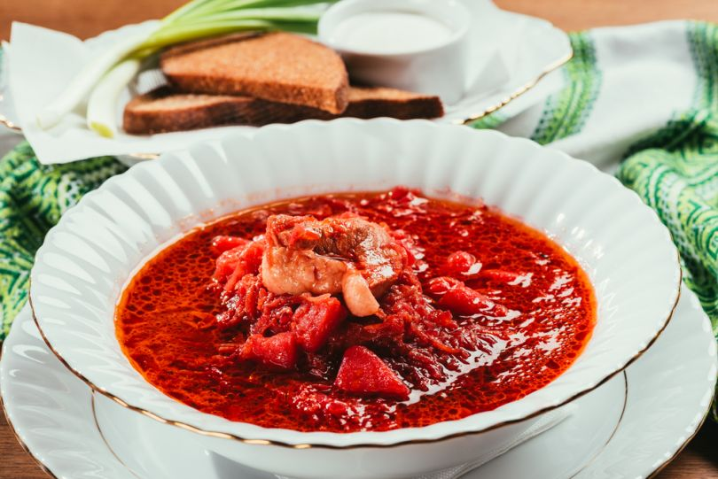

Odesa Borscht

Description
The iconic regional Ukrainian borscht recipe comes from Odesa, the southern Ukraine. This dish is cooked with salo (pork lard), sweet bell peppers and vinegar that give the borscht a fatty dense structure and a sour taste.
Ingredients
- 1 kg beef
- 2 bell peppers
- 400 g white cabbage
- 4 potatoes
- 1 carrot
- 2 onion
- 2 beetroots
- 1.5 tbsp tomato paste
- 4 black peppercorns
- 1 bay leaf
- 50 g salo (lard)
- 4 garlic cloves
- 1 tbsp vinegar (9%)
Back to Home page